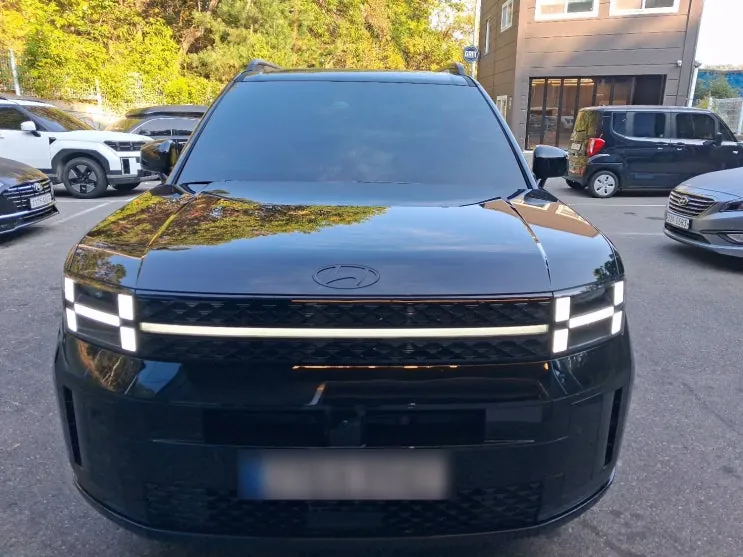
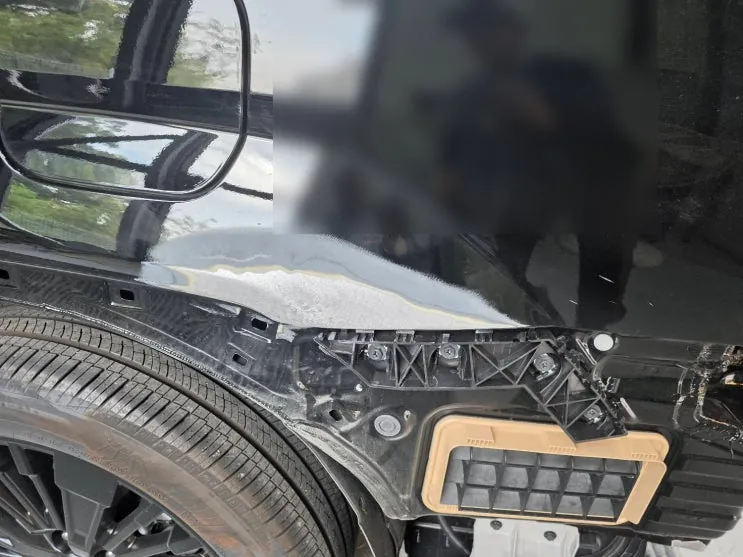
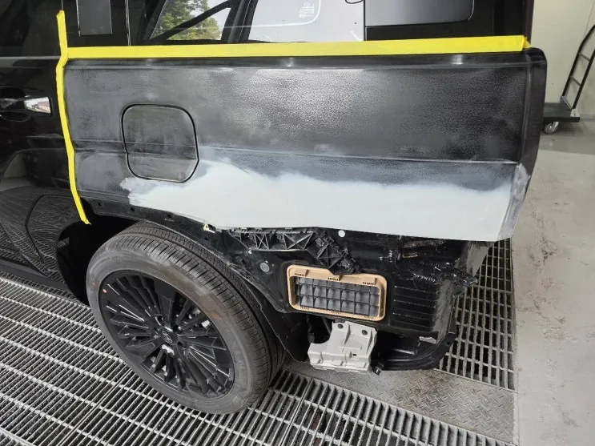
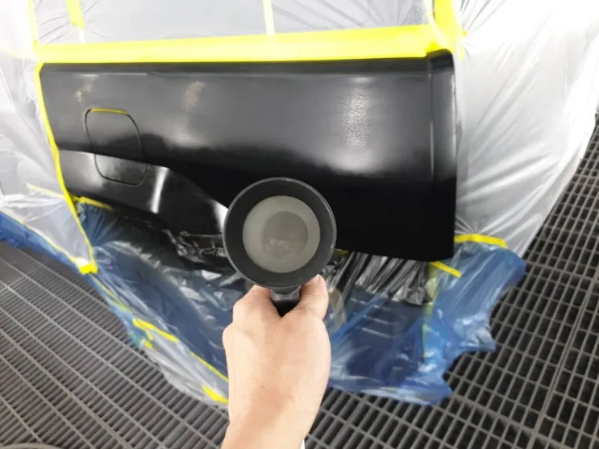
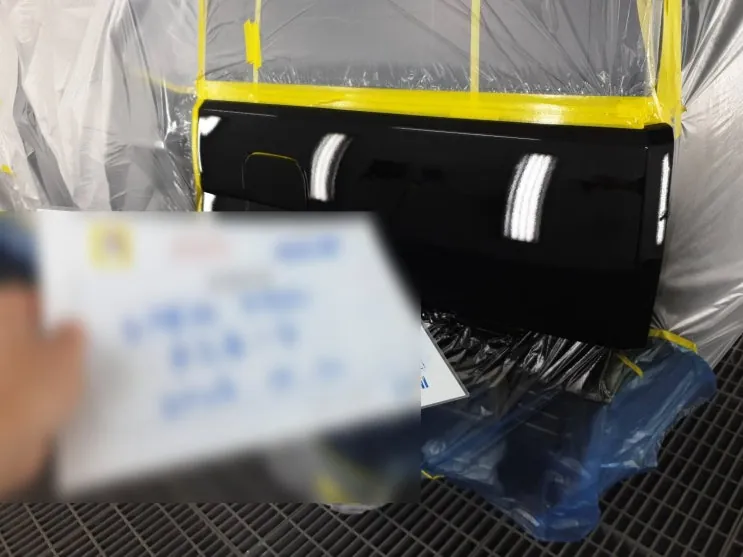
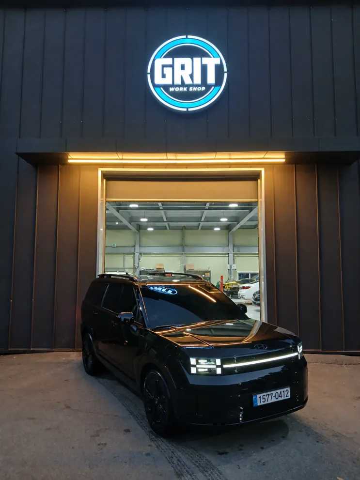

싼타페 운전석 뒤휀더·범퍼 도장
한눈에 보기
싼타페 운전석 뒤휀더와 범퍼의 도장 손상은 범퍼를 탈거해 전면 도장하고, 차체와 붙어 있는 휀더는 인접 패널과 경계가 이어지도록 블렌딩 도장으로 마감했습니다. 같은 색상코드라도 차의 현재 도막에 맞춰 조색해야 색 차이가 줄어듭니다.
- 차량
- 현대 싼타페
- 증상
- 운전석 리어휀더 도장 손상
- 리어범퍼 도장 손상
- 작업
- 도장면·범퍼 고정부 점검
- 범퍼 탈거
- 마스킹
- 연마·탈지
- 프라이머
- 조색
- 베이스·클리어 도장
- 블렌딩
- 폴리싱
- 범퍼 조립
- 작업장
- 그릿서비스 · 경기도 파주시 교하로 1312-53, 1동 1층

입고 상태와 작업 범위
현대 싼타페가 운전석 쪽 리어휀더와 범퍼 도장 작업으로 입고됐습니다. 먼저 두 부위의 도장면이 어디까지 상했는지, 표면 상태는 어떤지, 범퍼를 잡아 주는 고정부가 제대로 물려 있는지를 함께 확인했습니다.
리어휀더는 범퍼와 달리 차체와 한 몸으로 붙어 있는 패널입니다. 떼어서 칠할 수 없고 옆 도어·트렁크와 바로 이어지기 때문에, 색이나 광이 조금만 달라도 눈에 띕니다. 그래서 칠을 올리기 전에 어디까지 작업할지 범위를 정하는 데 시간을 들였습니다.

표면 준비
범퍼는 차에서 떼어 따로 작업했습니다. 휀더는 차체에 붙은 채로 칠해야 하므로 주변 패널과 유리, 고무 몰딩을 마스킹으로 덮어 보호했습니다.
기존 도막은 연마해 새 도료가 잘 붙을 수 있는 면으로 다듬었고, 연마 뒤에는 먼지와 기름기를 닦아 내 깨끗한 바탕을 만들었습니다. 이 준비가 고르지 않으면 칠을 아무리 잘 올려도 결과가 고르게 나오지 않습니다.
바탕이 정리된 뒤 프라이머를 올려 도료가 붙는 힘과 하지 상태를 확보했고, 건조 후 다시 가볍게 연마해 표면을 평평하게 맞췄습니다.


조색과 도장
색은 차량에 지금 올라가 있는 도막을 기준으로 맞췄습니다. 같은 색상코드라도 연식과 햇빛에 노출된 정도에 따라 색이 조금씩 달라지기 때문입니다. 조색한 도료로 시편을 만들어 옆 패널에 대 보며 색감을 비교했습니다.
도장 부스에서 베이스 코트를 여러 번에 나눠 올리고, 그 위에 클리어 코트를 덮어 광택과 보호층을 만들었습니다. 휀더는 옆 패널과 만나는 경계가 티 나지 않도록 블렌딩(번짐 도장) 으로 마무리했고, 범퍼는 떼어 둔 상태에서 전체 면을 고르게 칠했습니다.


건조·조립과 출고 점검
도장 후 충분히 말려 도막을 안정시켰습니다. 먼지가 앉았거나 표면이 귤껍질처럼 울퉁불퉁한 오렌지필이 생긴 곳은 컴파운드로 정리해 주변과 광을 맞췄습니다.
마지막으로 범퍼를 다시 달면서 차체와의 단차, 틈 간격, 고정 상태를 한 번 더 확인한 뒤 출고했습니다.

자주 묻는 질문
휀더는 왜 블렌딩 도장을 하나요?
리어휀더는 차체와 붙어 있어 옆 패널과 맞닿은 경계가 바로 보입니다. 경계 쪽으로 도료를 옅게 번지게 칠하면 새 칠과 기존 칠의 색 차이가 덜 드러납니다.
싼타페, 비슷한 증상이라면 사진부터 보내 주세요
파주·운정·교하·금촌 어디서든 전화나 카톡으로 상태를 먼저 알려 주시면 확인 후 안내해 드립니다. 카톡에는 손상 부위가 보이게 찍은 사진을 함께 보내 주세요.
그릿서비스 · 경기도 파주시 교하로 1312-53, 1동 1층 · 네이버 지도
이 작업의 원문 기록: 네이버 블로그에서 보기